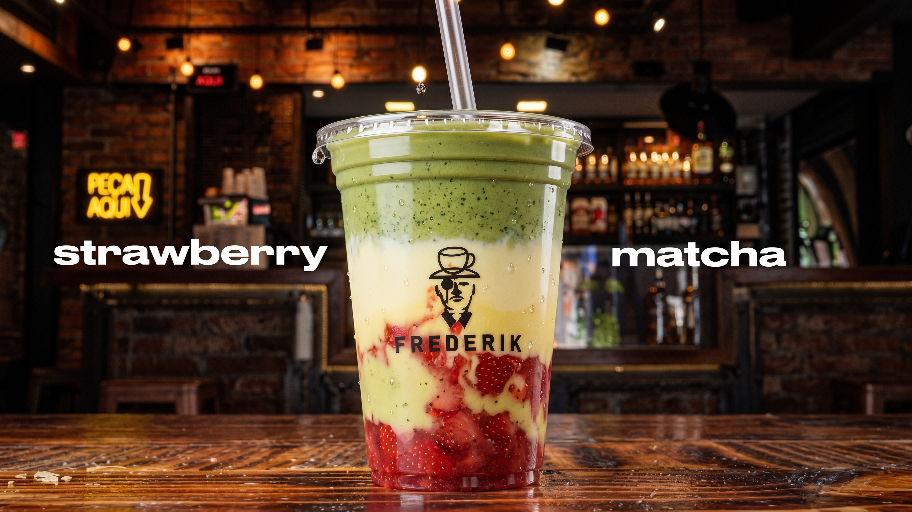
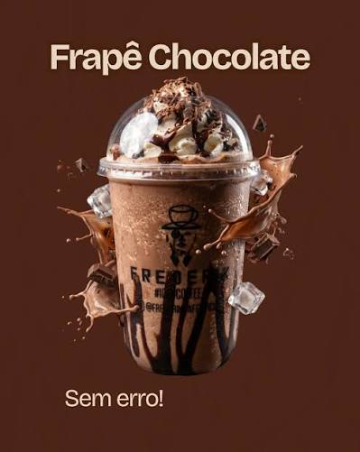
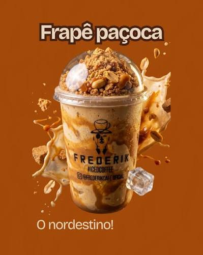

O Frederik Coffee é um cantinho especial que nasceu de uma mistura de inspiração, afeto e criatividade. seu nome foi inspirado no querido capitão frederico, do seriado chaves, trazendo um toque de saudade e carinho. aqui, tradição e inovação se encontram para oferecer uma experiência única em cada xícara.

Chocolate cremoso, gelo batido e chantilly. Perfeito para quem ama sabores clássicos.

A combinação do café gelado com o sabor irresistível da paçoca brasileira.